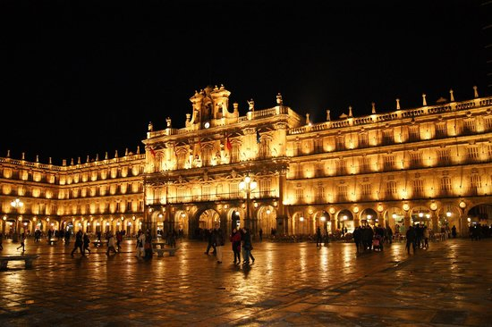

Madrid is the capital of Spain and the largest municipality in both the Community of Madrid and Spain as a whole. The city has almost 3.2 million inhabitants and a metropolitan area population of approximately 6.5 million.
It is the third-largest city in the European Union (EU), smaller than only London and Berlin, and its monocentric metropolitan area is the third-largest in the EU, smaller only than those of London and Paris.
The municipality covers 604.3 km2 (233.3 sq mi).
